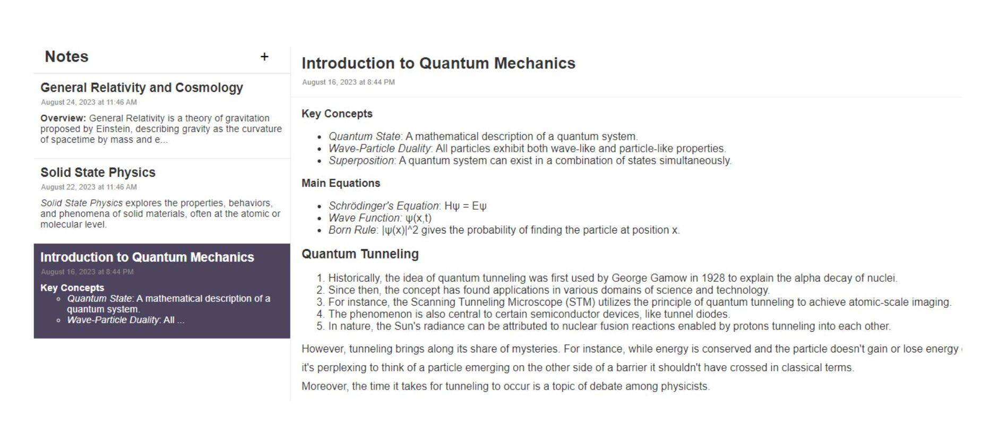
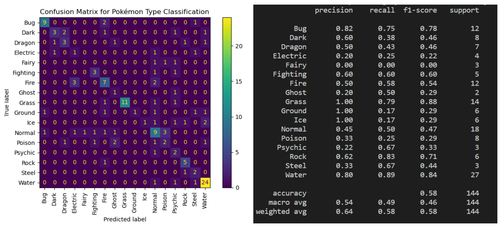
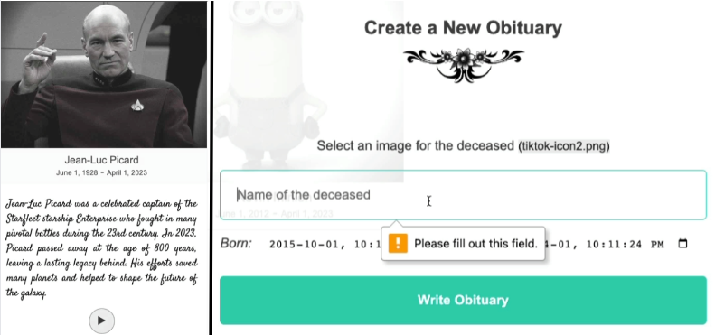

Q-Learning Taxi Driver Simulator
- Developed a reinforcement learning-based taxi AI simulator using OpenAI's Taxi-v3 environment. The agent operates in a 5x5 grid world, mastering efficient pick-up and drop-offs.
- The sophisticated simulator incorporates 500 distinct states, determining optimal actions based on the taxi's position, passenger's location, and target destination. Supported by robust Q-learning techniques, the AI undergoes training over 1,000 episodes, illustrating reinforcement learning's capability in diverse scenarios.
- Delve deeper and experience the AI's prowess: here.
Cloud-Based React Note-Taking Application
- Crafted a dynamic, cloud-based note-taking solution with React, AWS DynamoDB integration, and personalized storage via secure Google OAuth cross-device access.
- Streamlined infrastructure orchestration using Terraform and serverless Lambda functions in Python. Expertly hand-coded JS, CSS and HTML for optimal performance.
- Application deployed and accessible here.


Pokémon Type Classifier
- Crafted a machine learning model to predict Pokémon types based on comprehensive attributes using logistic regression.
- Processed a rich dataset detailing Pokémon traits, ensuring efficient model training through data standardization and effective preprocessing techniques.
- mplemented a well-structured pipeline for seamless classification. Rigorous evaluation with confusion matrices and performance metrics underscores the model's accuracy and potential enhancement areas.
- Dive into the fusion of Pokémon analytics and machine learning here.
EternalEcho: AI-Powered Obituary Generator
- Developed an innovative web app using ChatGPT API for personalized obituaries. Amazon polly for audio conversion, Cloudinary API for media management, and Python based Lambda functions for serverless backend processing.
- Leveraged React for UI, AWS DynamoDB for data storage, and applied modern web technologies (JS, CSS, HTML) to create a responsive and seamless user experience.


Maglev Smart Sonar System
- Earned the "Best Use of Hardware" accolade at CalgaryHacks 2022 by developing a system designed to minimize energy consumption of maglev trains. The system dynamically calculates optimal hover distances in real-time using a sonar sensor interfaced with a Raspberry Pi.
- Project details available here.